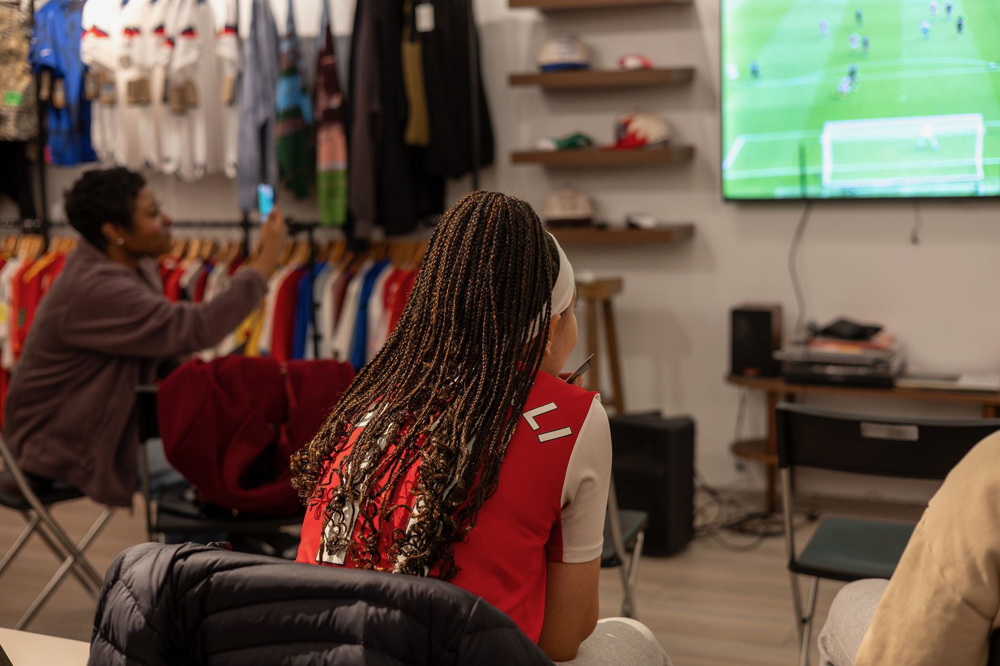
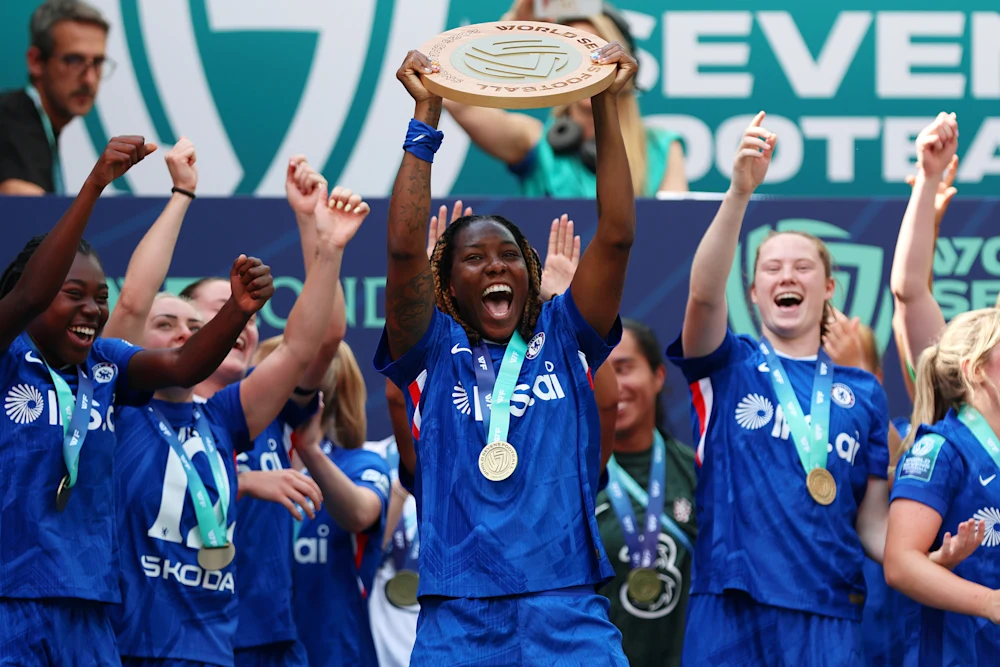
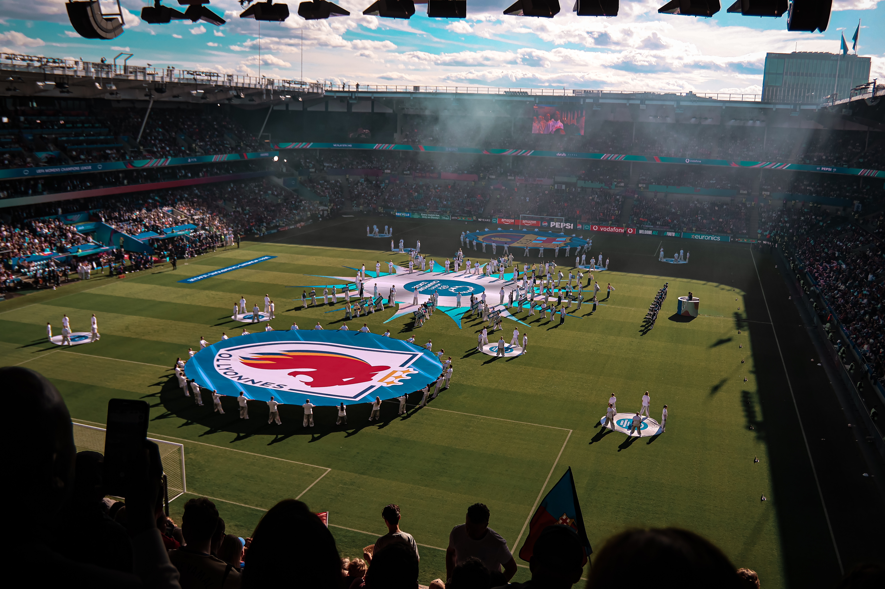
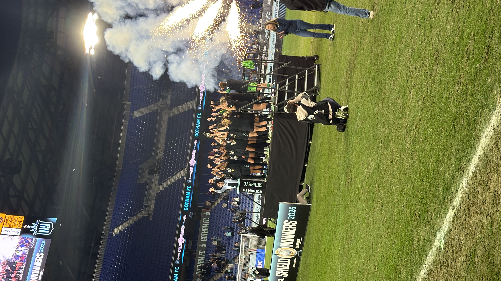
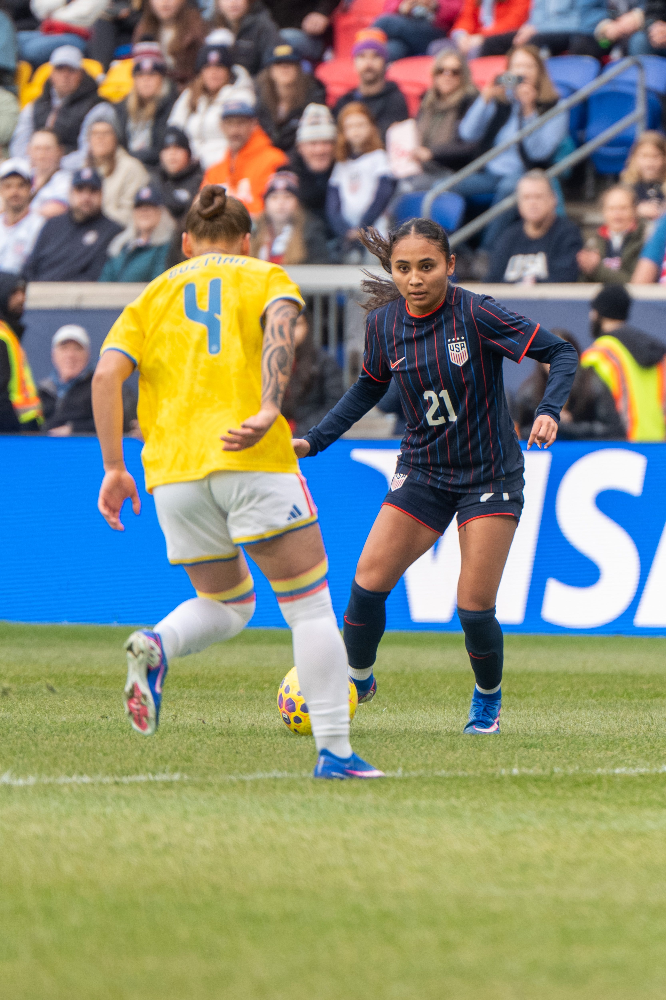

OUR
VISION
KENAME Sport is an independent women’s football organization that creates commercial opportunities in women’s football by connecting fans, brands, and experiences through the global game. We operate across four interconnected areas: Matchday, Travel, Media, and Consulting.
Through this framework, we connect fans to the world’s biggest tournaments and matchdays, develop digital storytelling experiences, and help brands identify opportunities to connect with women’s football audiences globally.
Our work is focused on participating in and contributing to the commercial growth of women’s football.




